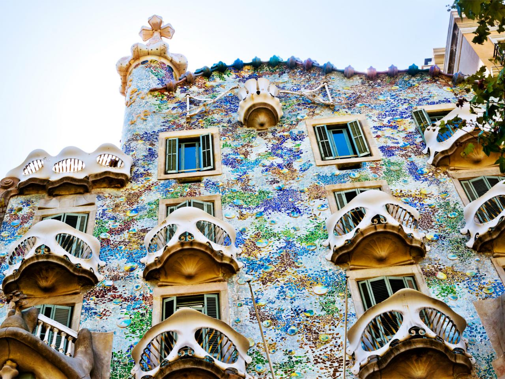

Locate Your Destination
CONTINENT
Asia
Republic of Maldives
Maldives
China
Hong Kong
Taiwan
Europe
France
Paris
Italy
Venice
Finland
Helsinki
Greece
Greece
Spain
Barcelona
UK
London
Hungary
Prague
Australia
Sydney
North America
Cuba
Cuba
Canada
Vancouver
Maui
Maui
|
Barcelona
Country: Spain
Rank:9
Tag:Iberian Sun; Architecture;

Barcelona is an enchanting seaside city with boundless culture, fabled
architecture, and a world-class drinking and dining scene.
People who have been to Maldives:
-
By Regis St Louis, Writer:
I love the sea, and taking an early-morning jog along the Mediterranean is my
favourite way to start the day. I'm also a bit of a history nerd, and relish
strolling the cobblestone lanes of the Gothic quarter, thinking about all the
people in past centuries who walked these same streets. And then there's the
food and drink – the first-rate tapas bars, the abundant and inexpensive wine,
the superb and reasonably priced multicourse lunches. Add to all this Catalan
creativity (Modernisme, Miró, Dalí), bohemian bars and stunning nearby getaways
and you have, quite simply, one of the world's most captivating cities. |
reviewID:r9
Highlights:
-
Architecture of the Ages
Barcelona's architectural treasures span 2000-plus years. Towering temple
columns, ancient city walls and subterranean stone corridors provide a window
into Roman-era Barcino. Fast forward a thousand years to the Middle Ages by
taking a stroll through the shadowy lanes of the Gothic quarter, past tranquil
plazas and soaring 14th-century cathedrals. In other parts of town bloom the
sculptural masterpieces of Modernisme, a mix of ingenious and whimsical
creations by Gaudí and his Catalan architectural contemporaries, for which this
city is so well known. Barcelona has also long inspired artists, including the
likes of Salvador Dalí, Pablo Picasso and Joan Miró, whose works are in bold
display in the city's myriad museums.
-
Under the Iberian Sun
The deep blue Mediterranean beckons. Sun-drenched beaches make a fine backdrop
to a jog, bike ride or long leisurely stroll along the seaside – followed by a
refreshing dip, of course. You can also enjoy the view from out on the water
while kayaking, stand-up paddleboarding or taking it easy on a sunset cruise.
Looming behind the city, the rolling forest-covered Collserola Hills provide a
scenic setting for hiking, mountain biking or just admiring the view. Closer to
the city centre, hilltop Montjuïc offers endless exploring amid botanic and
sculpture gardens, an old castle and first-rate museums with panoramic views at
every turn
-
A Moveable Feast
Barcelona's great artistic traditions don't end at the canvas. The masters of
molecular gastronomy – Albert Adrià, Carles Abellan et al – are part of the long
and celebrated tradition of Catalan cooking. Simple, flavourful ingredients –
seafood, jamón (cured ham), market-fresh produce – are transformed into
remarkable delicacies and then served up in captivating settings. You can feast
on hearty, rich paella at an outdoor table overlooking the sea or step back to
the 1920s at an elegant art nouveau–filled dining room. Barcelona's wide-ranging
palate adds further complexity: Basque-style tapas bars, Galician seafood
taverns, avant-garde Japanese restaurants and sinful chocolate shops are all
essential parts of the culinary landscape.
Things To Do:
- La Rambla
address: Barcelona, Spain gettingThere Metro: Catalunya, Liceu, Drassanes
- La Sagrada Familia
telephone: +34 932073031 address: Carrer de Mallorca 401 gettingThere Metro: Sagrada Familia moreInfo: www.sagradafamilia.cat openHours: 9am - 8pm Apr-Sep, to 6pm Oct - Mar
People who like this place also like to go to:
Paris
Prague
source:
Lonely Planet:
www.lonelyplanet.com/barcelona
|